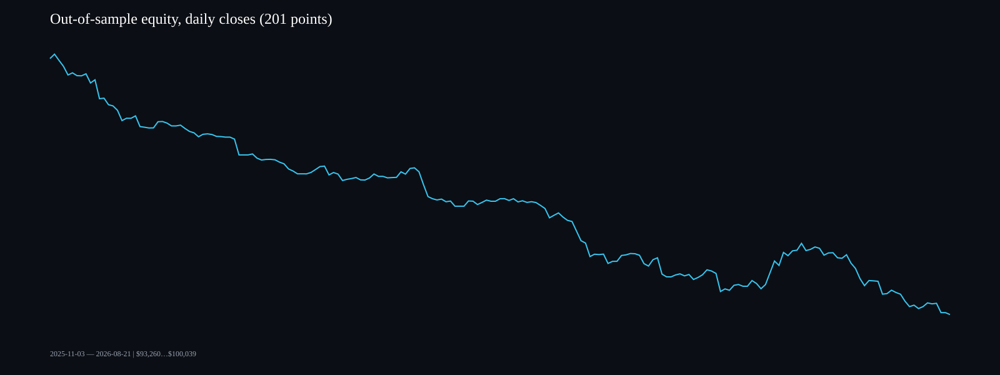
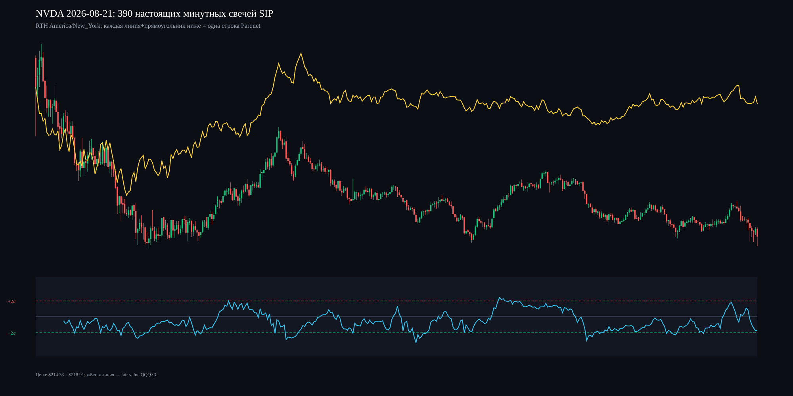

Данные: Alpaca SIP, только официальная RTH America/New_York, 194,490 минут, 501 сессий. Все количества баров сверены с биржевым календарём.
Отклонение обнуляется на первой минуте каждой сессии. Сигналы выбраны на development: |Z| ≥ 2.75, hook 0.05σ. Перцентили фильтров 90/92.5/95/97.5/99 проверены на отдельном validation при условии совместного сохранения ≥95% исходных development winners. Выбрано: время q=97.5% → 51 мин; стоп q=99% MAE → 0.97%; совместное сохранение 97.1%. Последние 40% истории — нетронутый holdout.
| Период | Сделки | Доходность | Sharpe | Sortino | Max DD | Win rate | PF |
|---|---|---|---|---|---|---|---|
| Development без фильтров | 553 | -4.97% | -2.12 | -2.51 | 5.46% | 49.9% | 0.76 |
| Validation без фильтров | 264 | -4.34% | -5.32 | -5.21 | 4.60% | 47.0% | 0.44 |
| Holdout без фильтров | 547 | -6.58% | -4.15 | -4.48 | 6.61% | 50.6% | 0.60 |
| Development + time/stop | 553 | -4.52% | -2.42 | -3.19 | 5.27% | 49.2% | 0.77 |
| Validation + time/stop | 264 | -3.76% | -6.20 | -6.10 | 4.00% | 47.0% | 0.47 |
| Holdout + time/stop | 547 | -6.49% | -4.30 | -4.70 | 6.50% | 50.3% | 0.60 |
| Full + time/stop (описательно) | 1364 | -14.77% | -3.72 | -4.34 | 14.78% | 49.2% | 0.66 |


Это одноногая симуляция NVDA по лидеру QQQ, не парный хедж. Учтены комиссия и проскальзывание; не учтены borrow fee, влияние объёма, налоги и задержка получения данных. Результат не является обещанием будущей доходности.